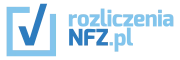
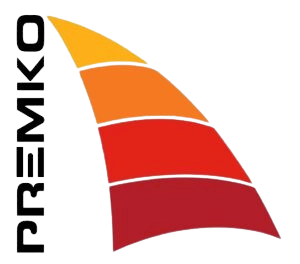
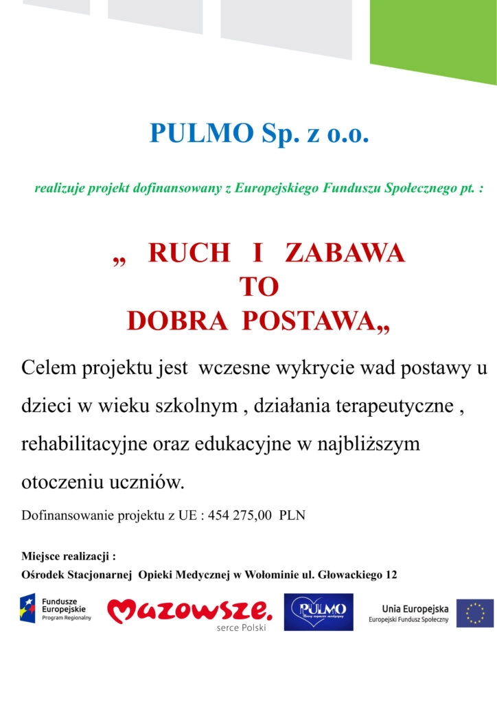
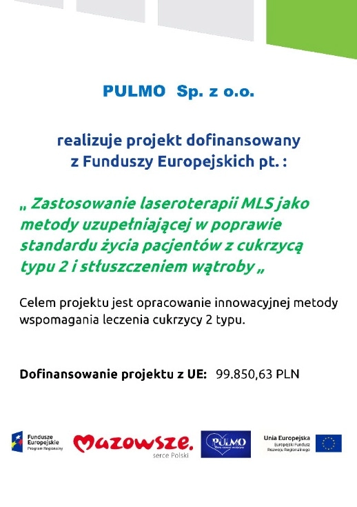
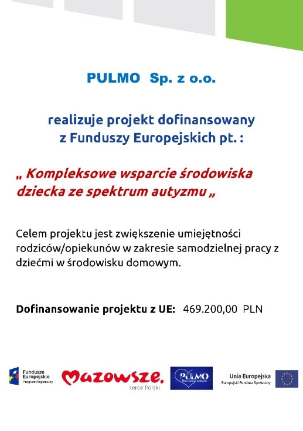
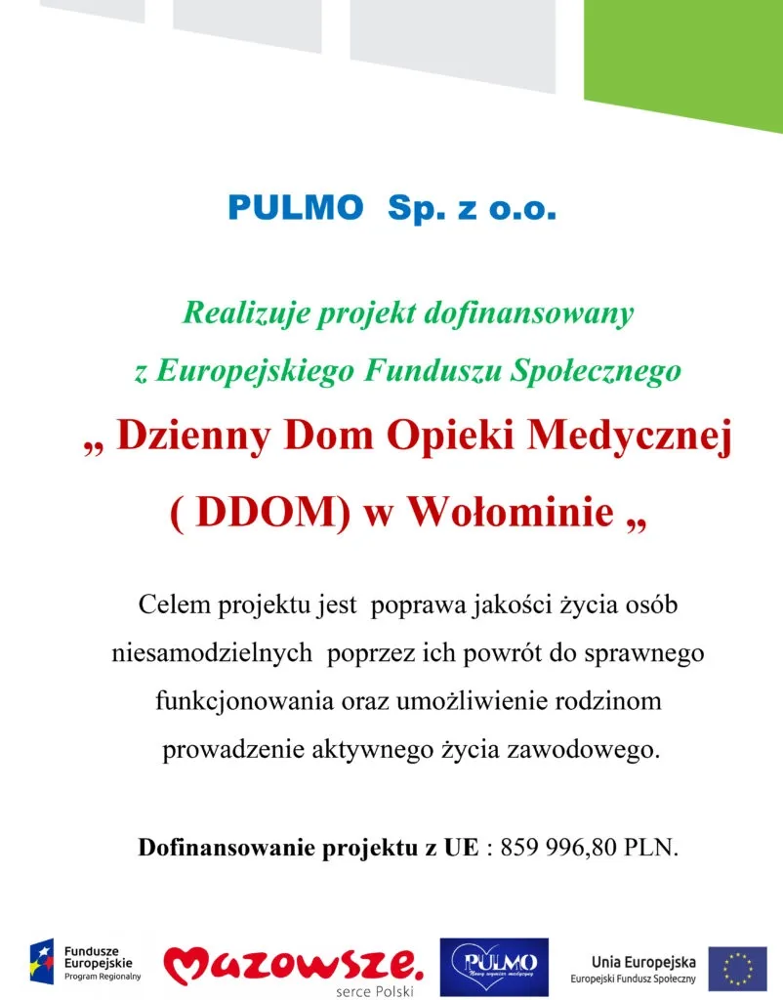
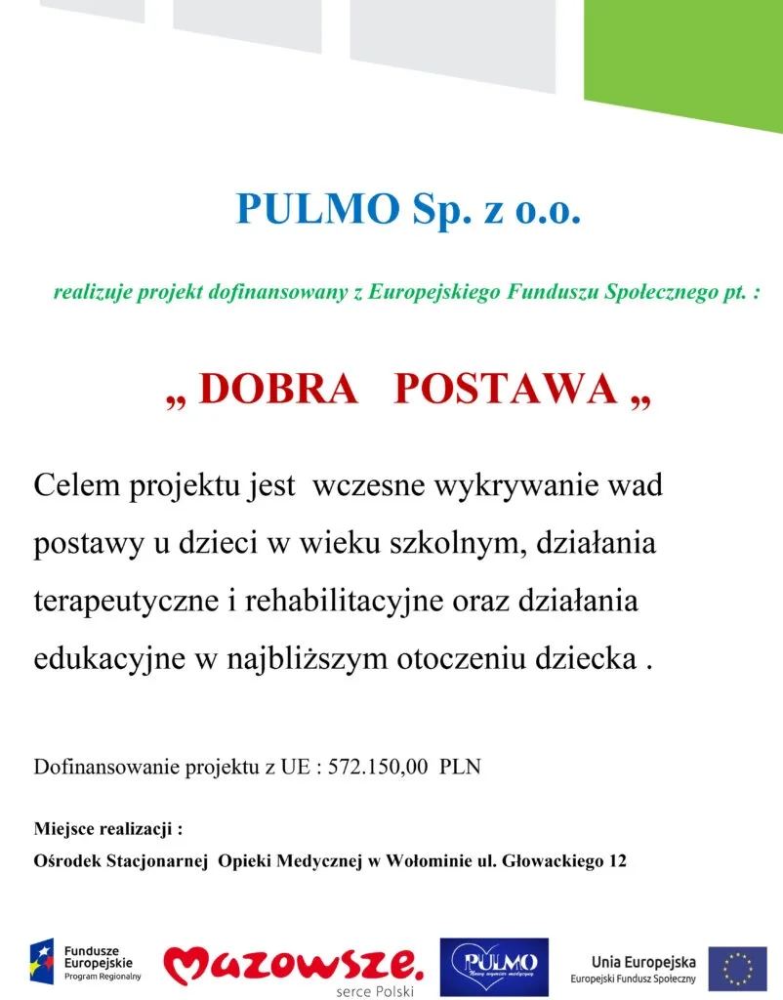

Jesteśmy siecią placówek opieki zdrowotnej. Zapewniamy wyjątkową opiekę fizjoterapeutyczną lokalnym społecznościom. Wyróżniamy się ogromną empatią, miłą i rodzinną atmosferą oraz indywidualnym podejściem do pacjenta w każdym wieku.
Sprawdź lokalizajceOferujemy ceny specjalne
Karta Dużej Rodziny
Karta Wołomin Blisko
Zniżki dla sportowców
Z nimi współpracujemy


Realizujemy projekty unijne




